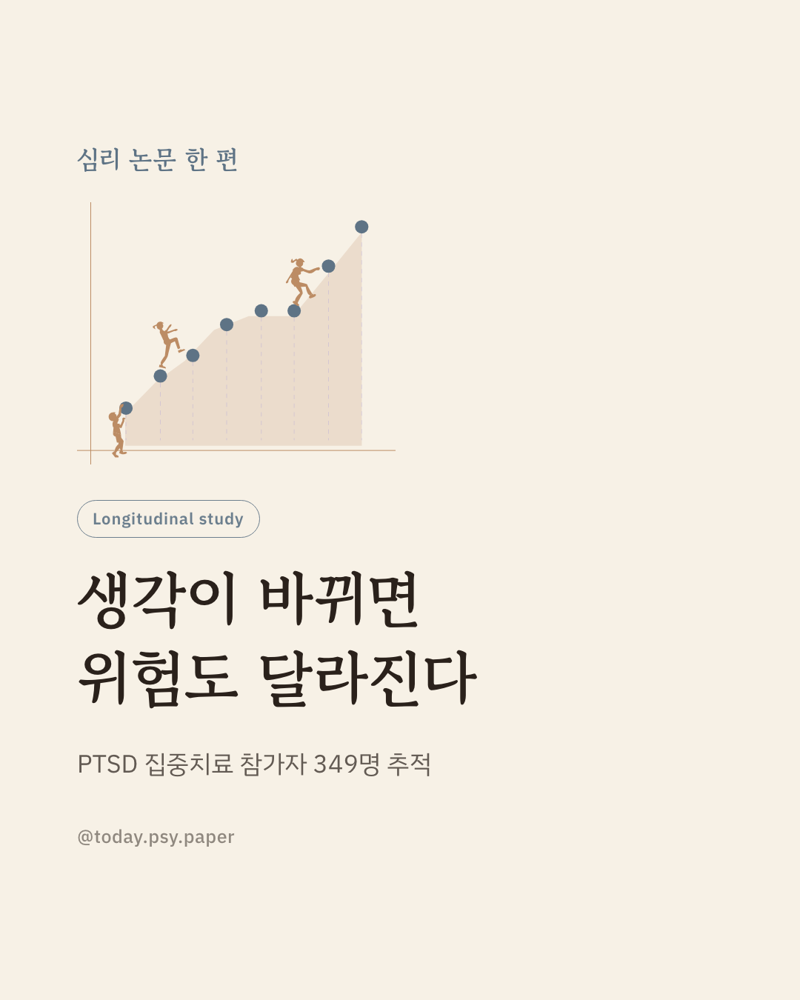
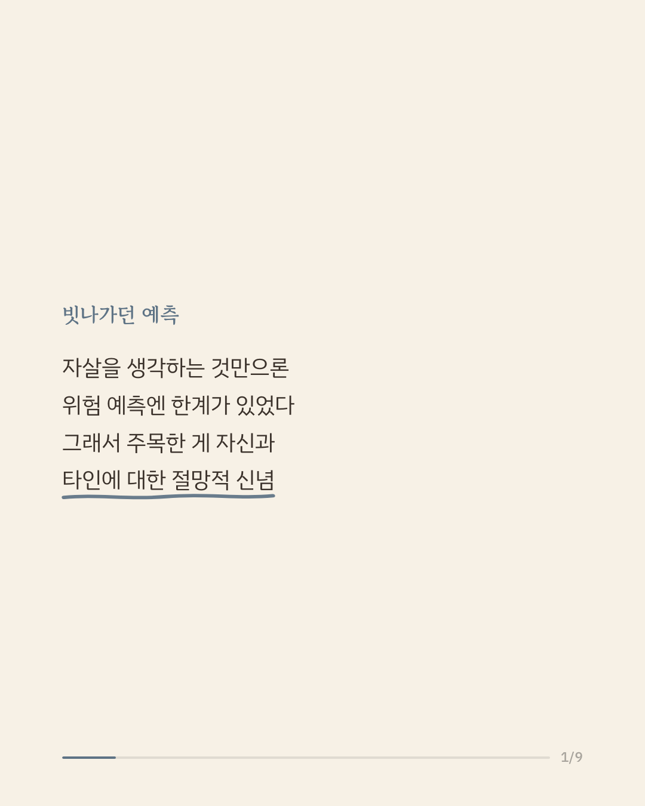
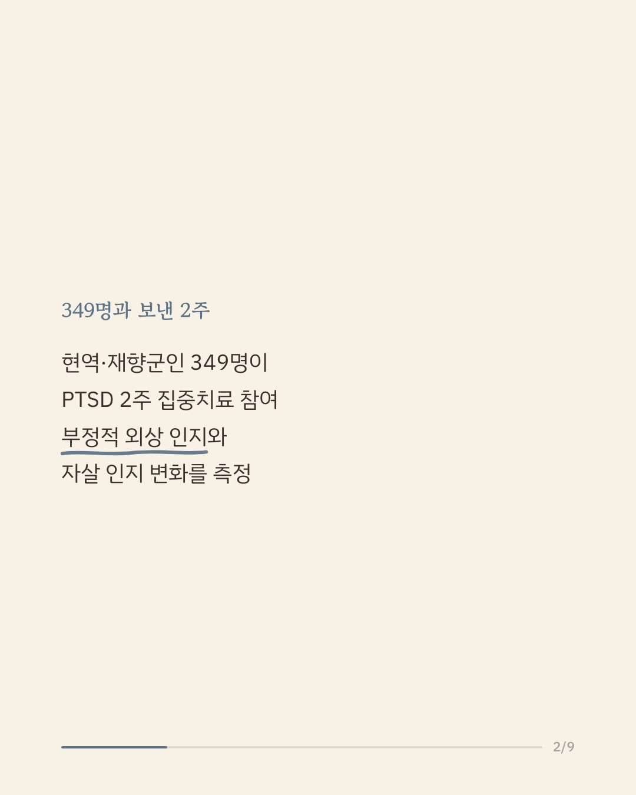
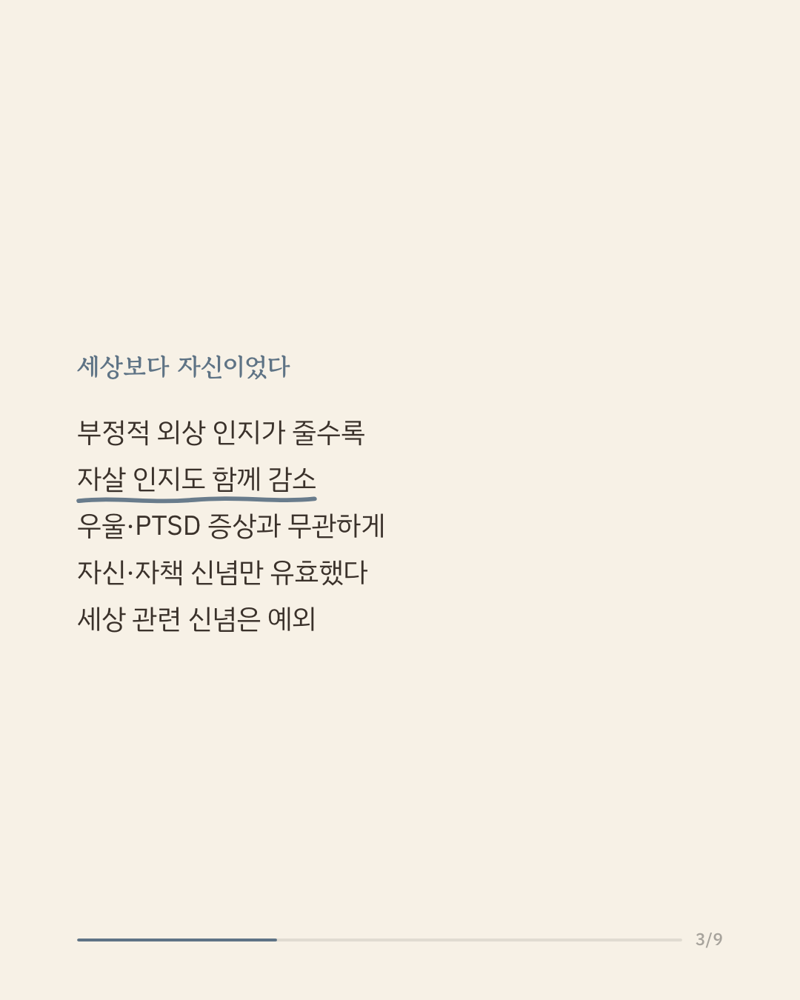
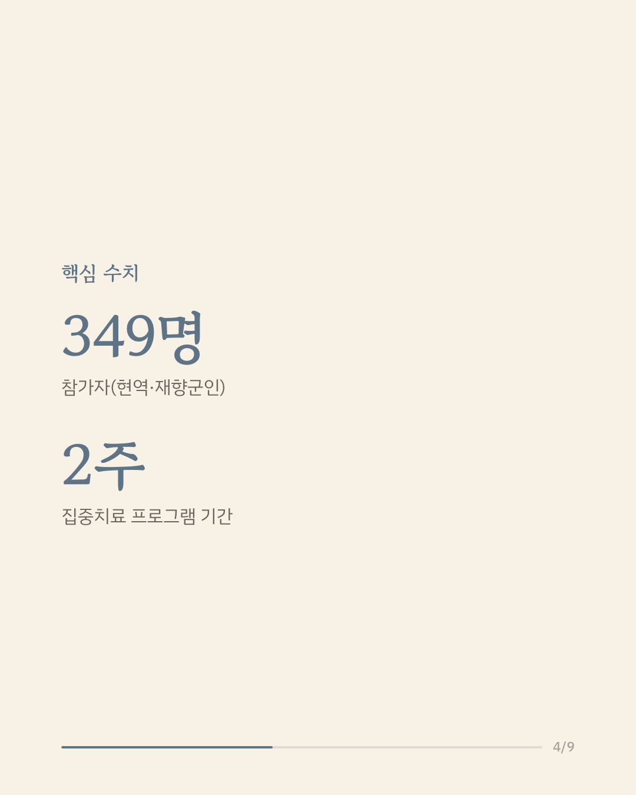
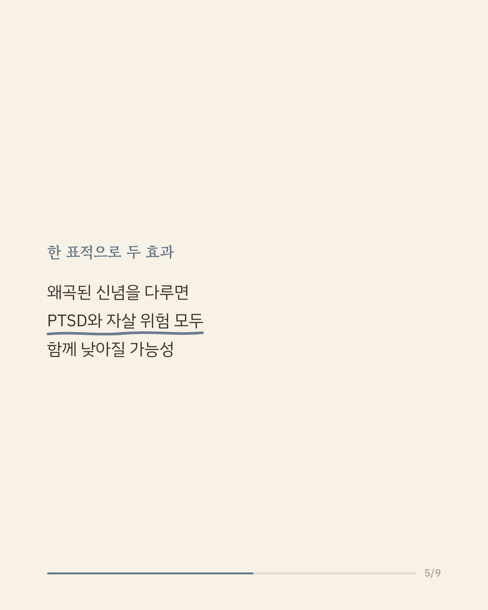
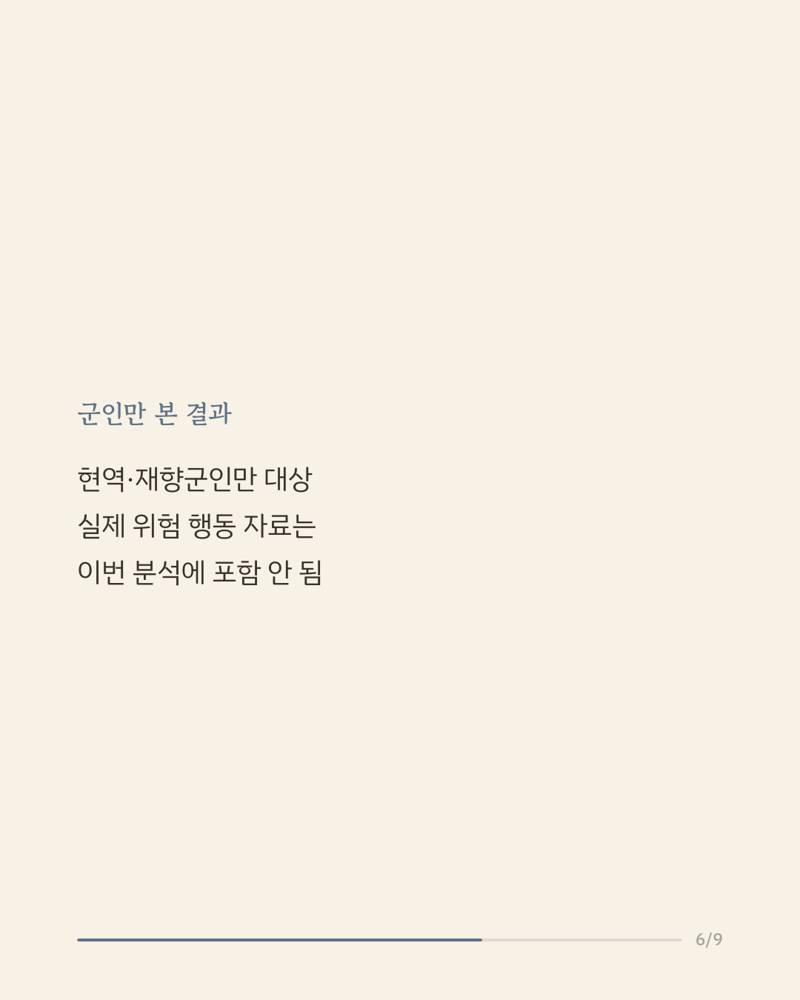
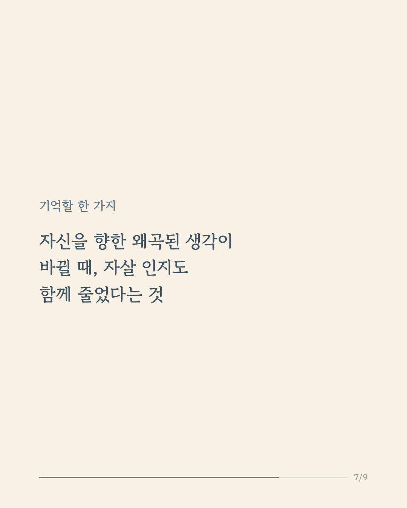
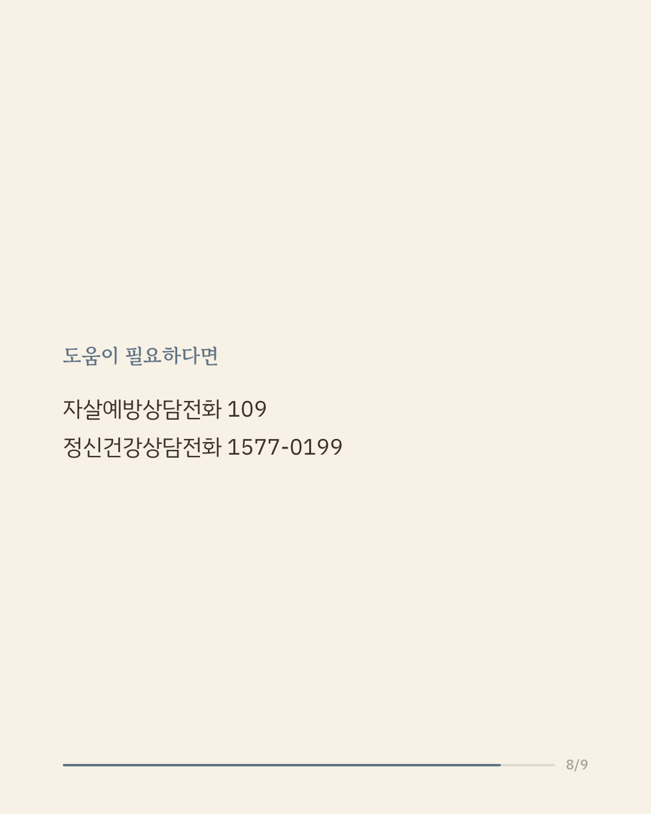
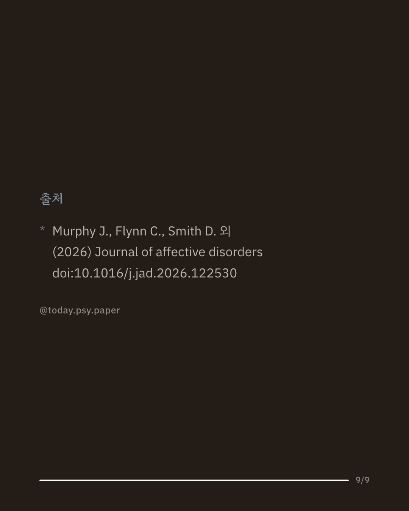

외상 후 스트레스 장애(PTSD)를 겪는 사람들은 만성적인 자살 위험이 높다고 알려져 있습니다. 하지만 자살을 생각하는 것(자살 사고) 자체는 실제 위험을 예측하는 데 한계가 있었습니다. 최근 연구자들은 자신과 타인에 대한 절망적인 핵심 신념, 이른바 '자살 인지'에 주목하고 있습니다. 이번 연구는 현역·재향군인 349명이 2주간의 PTSD 집중치료 프로그램에 참여하는 동안, 부정적 외상 인지(왜곡된 트라우마 관련 신념)가 줄어드는 정도와 자살 인지 변화 사이의 관계를 살펴봤습니다. 분석 결과, 부정적 외상 인지가 줄어들수록 자살 인지도 함께 낮아지는 경향이 확인됐습니다. 이 관계는 PTSD와 우울 증상의 심각도를 고려해도 유지됐습니다. 흥미롭게도 자신에 대한 신념과 자책 관련 신념이 줄어드는 것은 자살 인지 감소와 연관이 있었지만, 세상에 대한 부정적 신념 변화는 관련이 없었습니다. 이 연구는 현역·재향군인을 대상으로 했으며, 실제 위험 행동 자료는 포함하지 않았습니다. Journal of Affective Disorders (2026), 'Evaluation of negative posttraumatic cognitions as a predictor of suicide cognitions during an intensive treatment program for PTSD' 힘든 마음이 들 때는 자살예방상담전화 109, 정신건강상담전화 1577-0199에서 도움을 받을 수 있습니다. #임상심리 #정신건강정보 #외상치료 #군인정신건강 #자살예방연구
python3 publish.py 42772527